Dr. Öğr. Üyesi, Kadın Hastalıkları ve Doğum / Jinekolojik Onkoloji Cerrahisi, İstinye Üniversitesi Tıp Fakültesi — Liv Hospital Topkapı, İstanbul.
Kadın sağlığı · ileri jinekolojik cerrahi · İstanbul
Bilimsel bireysel bedensel bütünüyle kadın sağlığı
Vajinal estetik, jinekolojik onkoloji cerrahisi ve minimal invaziv cerrahide; ayrıntılı değerlendirme, açık bilgilendirme ve hasta merkezli cerrahi planlama.
Bu site bilgilendirme amaçlıdır; tanı, tedavi kararı ve cerrahi planlama kişisel muayene ile yapılır.
Jinekolog gözüyle
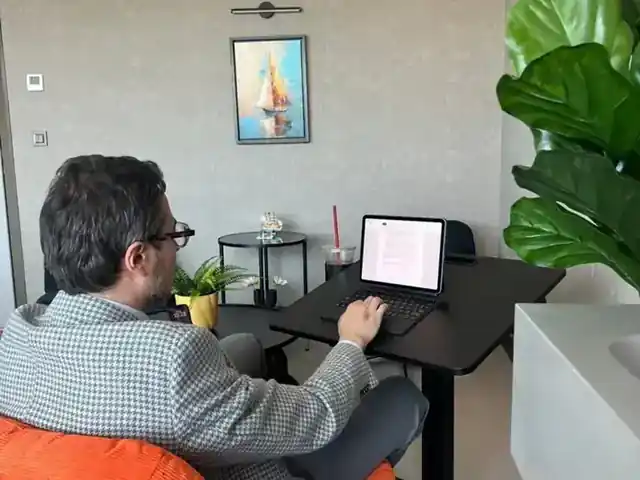
“Jinekoloji benim için bir uzmanlık alanından çok, bir kadının hayatına bütünüyle bakabilmek demek. Muayene odasında da ameliyathanede de önceliğim kadının ne yaşadığını anlamak, kanıtın gösterdiğini açıkça söylemek, kanıtın yetmediği yerde dürüst kalmaktır.
Cerrahi tek kişilik bir iş değil; iyi hazırlanmış bir ekibin, birbirini duyan insanların ve aynı kadına aynı özenle bakan ellerin ortak işidir. Ameliyathanede yıllar içinde kurulan güven; teknik becerinin yanında birlikte çalışmayı, karşılıklı saygıyı ve yapılan işe duyulan bağlılığı da içerir.
Kadın hastalıkları ve doğum ile jinekolojik onkoloji cerrahisi eğitiminden gelen cerrahi disiplini; minimal invaziv cerrahi, vajinal estetik, HPV, derin endometriozis, vajinal mikrobiyota ve ERAS protokolleri alanlarındaki aktif araştırmalarımla birlikte sürdürüyorum.
İstinye Üniversitesi Liv Hospital Topkapı’da Dr. Öğr. Üyesi olarak kadınlara bakıyor, ameliyat ediyor ve araştırma yürütüyorum. Amacım bilgiyi karşımdaki kadının anlayacağı dile çevirmek; tedaviyi yalnızca tıbbi göstergeler üzerinden değil, kadının korkularını, mahremiyet kaygılarını ve beklentilerini de hesaba katarak kişiye özel planlamaktır.”
Curriculum Vitae
İstanbul Üniversitesi İstanbul Tıp Fakültesi mezunu; TUS Türkiye 7.’liği sonrası kadın hastalıkları ve doğum uzmanlığını İstanbul Tıp Fakültesi’nde, jinekolojik onkoloji cerrahisi yandal eğitimini Eskişehir Osmangazi Üniversitesi Tıp Fakültesi’nde tamamladı.
Mesleki hayatı Süleymaniye Kadın Doğum ve Çocuk Hastalıkları Hastanesi, Diyarbakır Gazi Yaşargil, İzmir Kâtip Çelebi, İzmir Tınaztepe, İstinye ve Biruni Üniversitesi çizgisinde; üniversite ve eğitim araştırma hastanelerinde geçti.
Jinekolojik onkoloji cerrahisi, minimal invaziv cerrahi, vajinal estetik, derin endometriozis, HPV ilişkili süreçler, vajinal mikrobiyota ve ameliyat sonrası iyileşme protokolleri.
SCIE indeksli makaleler, sistematik derlemeler, meta-analizler; ulusal ve uluslararası yayınevlerinde kitap editörlüğü ve bölüm yazarlıkları.
TÜBİTAK ve ClinicalTrials.gov’a kayıtlı çeşitli çalışmalar.
PRISMA 2020, RevMan 5.4, Stata 17, DerSimonian-Laird random-effects model, overlap-weighted propensity analizi ve sistematik derleme protokol kayıtları.
Türkçe ana dil; İngilizce ana dil seviyesinde. İtalyanca ve Almanca başlangıç seviyesi. Kurumsal iletişim: serhat.sen@istinye.edu.tr. ORCID: 0000-0002-2215-0662.
Bilgi Merkezleri
Kadın olmanın dört ayrıcalığı.
Genital Performans
Vajinal estetik, fonksiyonel beklentiler, cinsel sağlık ve kişisel değerlendirme içerikleri.
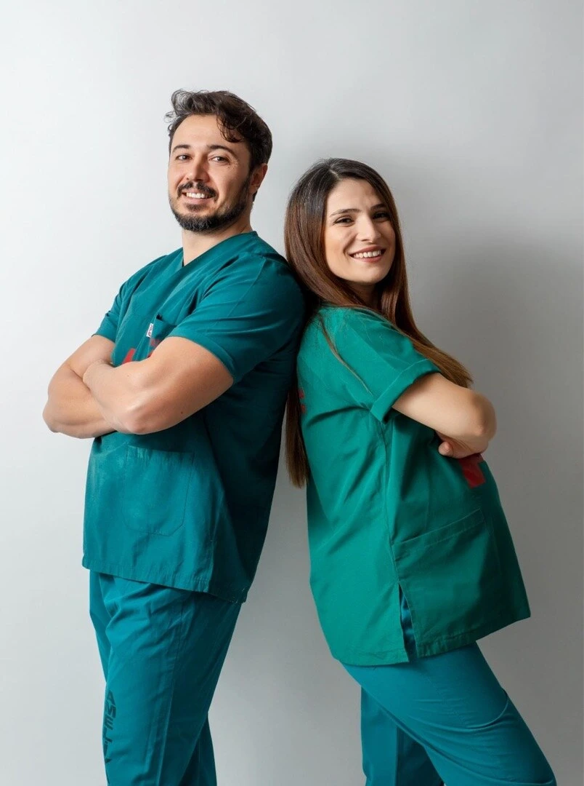
Hpv ve Ötesi
Tarama, takip, aşı, kolposkopi ve hasta soruları için yalın bilgilendirme alanı.
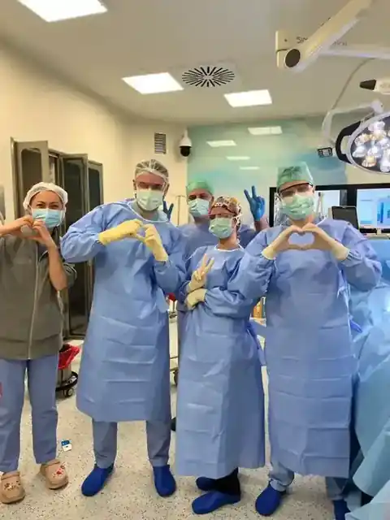
Kanser Ansiklopedisi
Rahim, yumurtalık, rahim ağzı ve vulva-vajina kanserlerine yönelik rehber içerikler.
Hamilelik Yolu
Gebelik öncesi hazırlık, takip, beslenme, tarama testleri ve güvenli hasta eğitimi.
Basın bağlantıları
Sosyal ve konvansiyonel medyadan.
Sosyal medyada
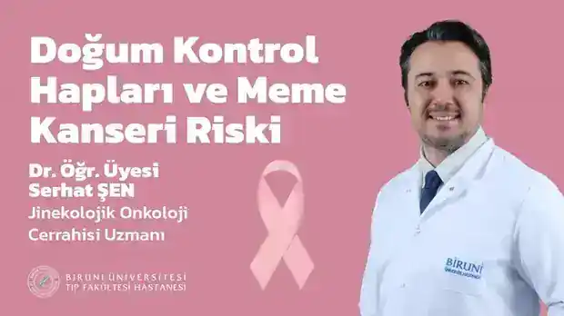
YouTubeDoğum kontrol hapları ve meme kanseri riski
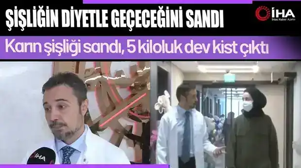
YouTubeKarın şişliği ve 5 kiloluk kist
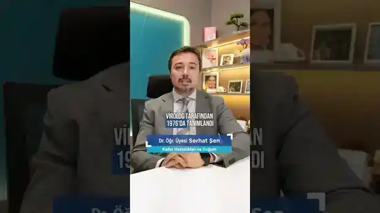
YouTube ShortsHPV virüsü
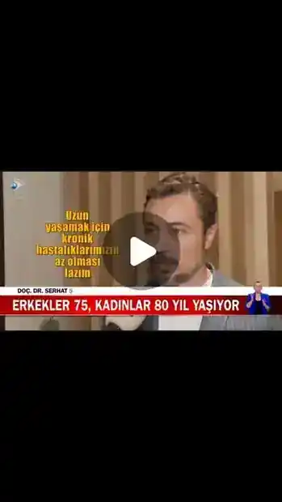
InstagramUzun yaşamanın sırrı kadın olmak
Instagram · Onco TVHPV hakkında önemli bilgiler
Instagram · Biruni HastanesiMeme kanseri ve risk faktörleri
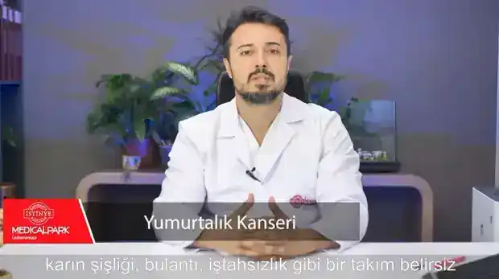
Facebook · Medical ParkOver kanseri bilgilendirmesi
Yazılı ve görsel basında
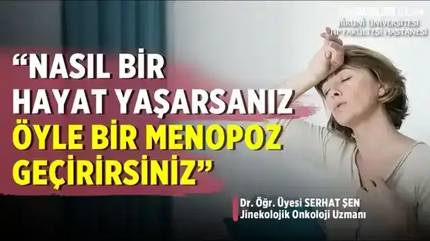
HaberlercomErken menopoz uyarısı
Son DakikaMenopoz ve yaşam tarzı
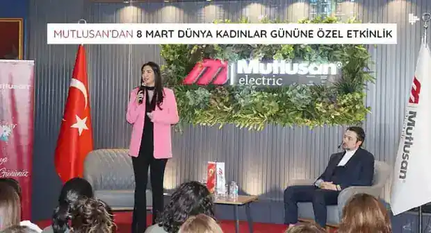
Sektörüm DergisiKadın sağlığı semineri
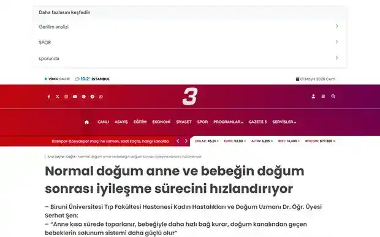
Kanal 3Normal doğumun faydaları
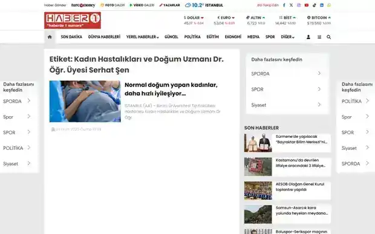
Haber 1Normal doğumda hızlı iyileşme
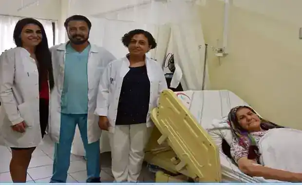
Ege PostasıKarın kitlelerinden aynı gün kurtuldular
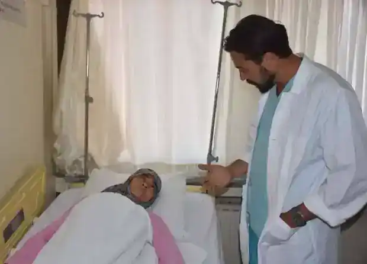
Ameliyat Olanlar
Hikayeni ekle
Yorumlar
01
Kişiselleştirilmiş değerlendirme. Standart paketler yerine muayene, öykü ve hedeflere dayalı planlama.
02
Mahremiyet ve mevzuat hassasiyeti. Hasta kimliği, ameliyat alanı ve uygunsuz görsel kullanılmaz.
03
Bilimsel güven. Gereksiz vaat, mucize sonuç ve “önce-sonra” baskısı yerine açık bilgilendirme.
Sertifikalar
Genital estetik ve kozmetik jinekoloji alanında uluslararası eğitim belgesi.
Sertifikalar bölümü ileride yeni belgeler, kongre katılımları ve akademik eğitimlerle genişletilebilir. Her belge ayrı kart olarak eklenebilir.
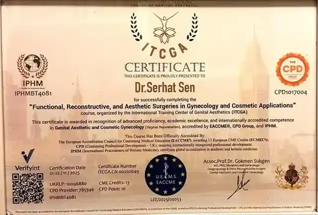
ITCGA · International Training Center of Genital Aesthetic
Functional, Reconstructive, and Aesthetic Surgeries in Gynecology and Cosmetic Applications
Genital aesthetic and cosmetic gynecology alanında fonksiyonel, rekonstrüktif ve estetik cerrahi uygulamalarına yönelik eğitim belgesi. Bu alan web sitesinde güven unsuru olarak, abartılı vaat oluşturmadan akademik/mesleki yetkinlik bağlamında kullanılmalıdır.
Yeni sertifika alanı
Kongre, kurs veya akademik belge eklenecek
Yeni belge yüklendiğinde bu slayt görselle değiştirilecek.
Yeni sertifika alanı
Uluslararası eğitim / üyelik belgesi
İleride eklenecek belgeler aynı kayan yapı içinde gösterilecek.
Uzmanlık Alanları
Koruyucu kadın sağlığından ileri cerrahiye uzanan odaklı uzmanlık alanları.
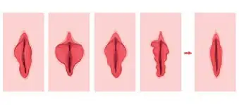
Vajinal Estetik
Fonksiyon, konfor, görünüm ve beklentileri birlikte değerlendiren; mahremiyeti ve gerçekçi bilgilendirmeyi merkeze alan kişisel planlama.
İstanbul Genital Estetik sayfasına git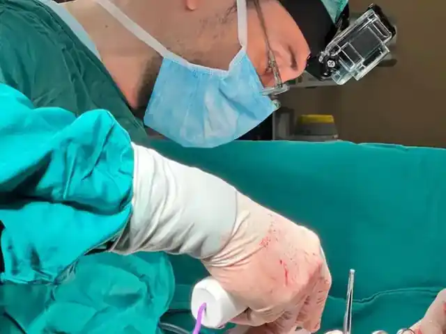
Jinekolojik Onkoloji Cerrahisi
Rahim, yumurtalık ve diğer jinekolojik kanserlerde tanı, evreleme, cerrahi seçenekler ve takip süreci hakkında anlaşılır bilgilendirme.
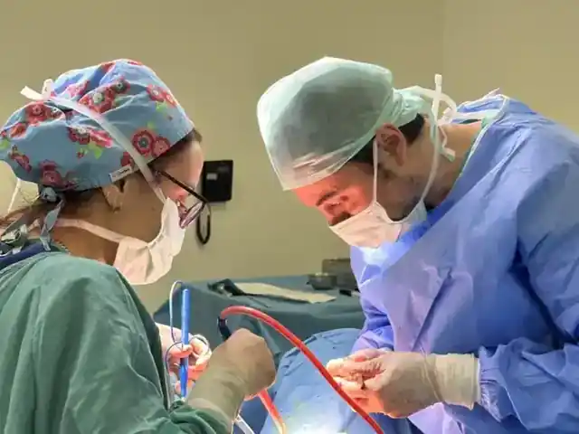
Minimal İnvaziv Cerrahi
Laparoskopik, histeroskopik ve kapalı cerrahi seçeneklerinde hasta hazırlığı, cerrahi planlama ve iyileşme sürecinin yapılandırılması.
Hasta Bilgilendirme
Muayene öncesinden iyileşme dönemine kadar yapılandırılmış hasta rehberleri.
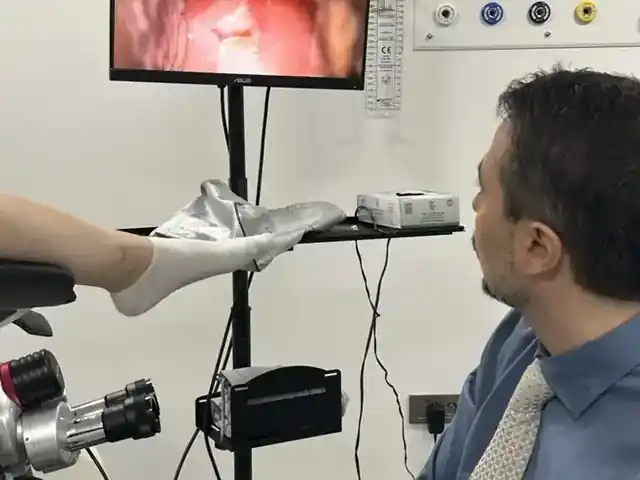
Vajinal rekonstrüksiyon sonrası iyileşme
Hijyen, hareket, cinsel aktiviteye dönüş, kontrol randevusu ve alarm bulguları sade bir dille anlatılır.
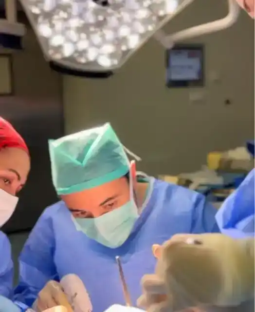
Rahim kanseri cerrahisi sonrası dönem
Açık veya kapalı cerrahi sonrası takip süreci hasta dostu, adım adım protokole dönüştürülür.
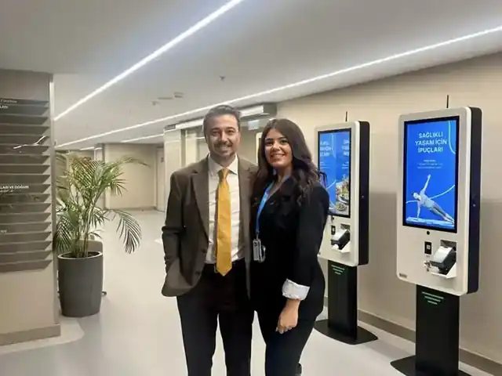
Endometriozis ve laparoskopi sonrası bakım
Ağrı, beslenme, mobilizasyon, işe dönüş ve kontrol zamanlaması için jinekolog onaylı rehberleme yapılır.
Yaşamın İçinden
Danışanlarımla olduğum her yer benim için bir yaşam alanı.
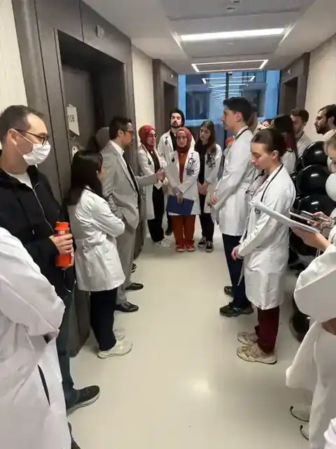
Yaşam alanım
Hastanede, koridorda, kongrede, ekranda ya da bir hasta rehberi hazırlarken; danışanlarımla temas ettiğim her yer jinekolog kimliğimin doğal yaşam alanıdır.
Video kapakları
İçerik görselleri
YouTube, basın ve eğitim içerikleri aynı çizgide; gerçek, sade ve hastaya yol gösteren bir dille seçilir.
Protokol ikonları
Hasta rehberleri
Ameliyat sonrası süreçler görselleştirilirken mahremiyet korunur; ham belge, hasta verisi veya özel klinik ayrıntı paylaşılmaz.
Gerçek hayat deneyimleri
Yaşanmış vaka örnekleri.
Ameliyathanede yaşanan gerçek klinik süreçlerden, hasta mahremiyetine dikkat edilerek hazırlanmış vaka başlıkları. Her kart daha sonra tıklanınca açılan ayrı bir anlatıma dönüşecek.
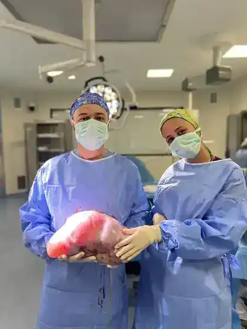
Vaka örneği
Büyük kitle cerrahisinde ekip disiplini
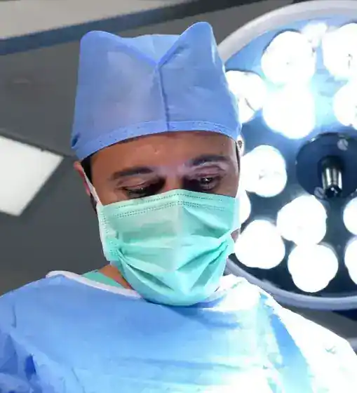
Ameliyathane notu
Cerrahi odak, sakinlik ve karar anı
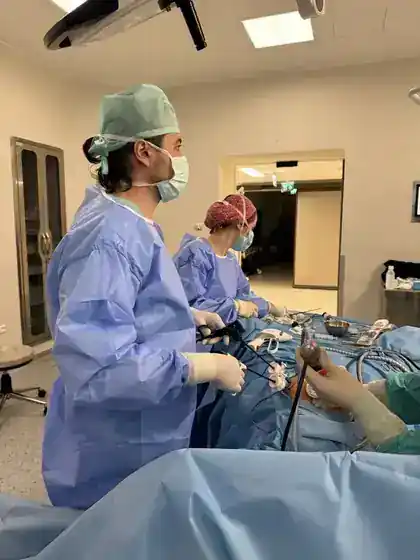
Teknik süreç
Minimal invaziv cerrahide planlı ilerleme
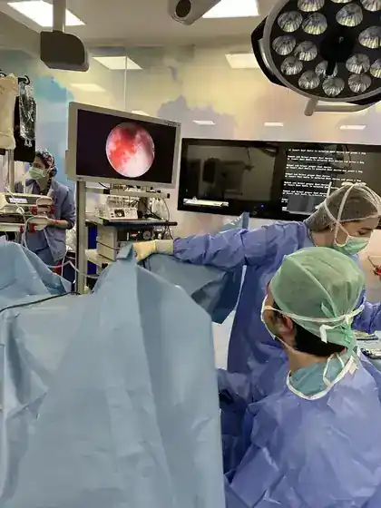
Görüntülü cerrahi
Ekrandaki bulgu, masadaki karar
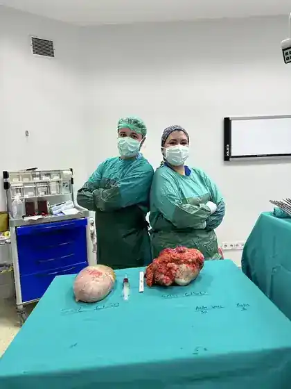
Yaşanmış vaka
Aynı seansta iki farklı cerrahi problem
Dijital Merkez
Yayınlar, sosyal medya ve hasta eğitim içerikleri tek yerde.
Sağlıklı Yaşam Rehberi
7’den 77’ye Jinekoloji
Kadın sağlığı tek bir dönemin sağlığı değildir; ergenlikten menopoz sonrasına kadar uzanan, her döneminde farklı sorular taşıyan bir süreklilik halidir. Aynı beden farklı dönemlerde farklı dilini konuşur — hekimin işi bu dili tanımak ve hastaya çevirmektir.
“Menopoz başladığında 'artık bitti' diye düşündüm; üç yıl sonra anladım ki bir dönem bitiyor, başka bir dönem başlıyor.”
Temsili anlatım — birden fazla hastanın deneyiminden damıtılmıştır.
Bu bölümde kadın sağlığını yalnızca muayene odasında değil; aile, beden farkındalığı, gündelik alışkanlıklar, yaş alma ve mahremiyet duygusuyla birlikte ele alan kısa yaşam notları yer alacak.
Aile ve güven
Kadın sağlığı kararlarında destek sistemi, mahremiyet ve doğru bilgi aynı anda önemlidir.
Beden farkındalığı
Adet düzeni, ağrı, akıntı, cinsel sağlık ve yaşam evreleri kişinin kendi bedenini tanımasıyla daha anlaşılır olur.
Yaşama ritmi
Uyku, hareket, beslenme ve stres yönetimi; gebelikten menopoza kadar kadın sağlığının görünmeyen altyapısını oluşturur.
Soru sorma hakkı
İyi sağlık iletişimi, hastanın merak ettiği şeyi utanmadan sorabilmesi ve yanıtı anlaşılır biçimde alabilmesidir.
20’ler
İlk yetişkinlik: beden farkındalığı, cilt, döngü, mahremiyet ve sağlıklı alışkanlıkların temeli.
30’lar
Yakında eklenecek.
40’lar
Yakında eklenecek.
50’ler
Yakında eklenecek.
60’lar
Yakında eklenecek.
70+
Yakında eklenecek.
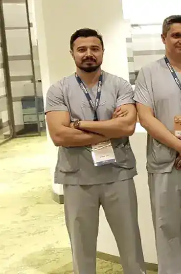
Akademik hayat, cerrahi odak, hasta iletişimi
AKADEMİK ÖZGEÇMİŞ
Eğitim, akademik yolculuk ve cerrahi deneyim tek bir akışta.
Kariyer faaliyetlerim
TAM ÖZGEÇMİŞ
SERHAT ŞEN, MD Jinekolojik Onkoloji Cerrahı Dr. Öğr. Üyesi · İstinye Üniversitesi, Liv Hospital Topkapı, İstanbul E-posta: serhatsen@istinye.edu.tr · ORCID: 0000-0002-2215-0662 Güncelleme: Nisan 2026 KIŞISEL VE İLETIŞIM BILGILERI --------------------- ------------------------------------------------------- Ad – Soyad Serhat ŞEN, MD Doğum Yılı 1983 Uyruk T.C. Ünvan Dr. Öğr. Üyesi, Jinekolojik Onkoloji Kurum İstinye Üniversitesi – Liv Hospital Topkapı, İstanbul E-posta serhatsen@istinye.edu.tr ORCID 0000-0002-2215-0662 Yabancı Dil İngilizce – ileri düzey (YÖKDİL: 88.5/100) --------------------- ------------------------------------------------------- EĞITIM Jinekolojik Onkoloji Cerrahisi – Yan Dal Uzmanlığı Eskişehir Osmangazi Üniversitesi Tıp Fakültesi, Jinekolojik Onkoloji Cerrahisi Anabilim Dalı · 2012 – 2015 - T.C. Sağlık Bakanlığı Ulusal Yan Dal Belgesi (Jinekolojik Onkoloji Cerrahisi). Kadın Hastalıkları ve Doğum – Uzmanlık İstanbul Üniversitesi, İstanbul Tıp Fakültesi · 2006 – 2011 Tıp Doktoru (MD) İstanbul Üniversitesi, İstanbul Tıp Fakültesi · 2000 – 2006 AKADEMIK VE MESLEKI DENEYIM Dr. Öğr. Üyesi – Jinekolojik Onkoloji İstinye Üniversitesi, Liv Hospital Topkapı, İstanbul · 2025 – Halen Dr. Öğr. Üyesi – Jinekolojik Onkoloji Biruni Üniversitesi Tıp Fakültesi, İstanbul · 2024 – 2025 Dr. Öğr. Üyesi – Jinekolojik Onkoloji İstinye Üniversitesi, Medical Park Gaziosmanpaşa Hastanesi, İstanbul · 2022 – 2024 Dr. Öğr. Üyesi – Jinekolojik Onkoloji İzmir Tınaztepe Üniversitesi Tıp Fakültesi · 2021 – 2022 Jinekolojik Onkoloji Cerrahisi Uzmanı SBÜ İzmir Katip Çelebi Üniversitesi Atatürk Eğitim ve Araştırma Hastanesi · 2018 – 2021 Jinekolojik Onkoloji Cerrahisi Uzmanı SBÜ Diyarbakır Gazi Yaşargil Eğitim ve Araştırma Hastanesi · 2016 – 2018 Kadın Hastalıkları ve Doğum Uzmanı İstanbul Süleymaniye Semih Şakir Kadın Doğum ve Çocuk Hastalıkları Hastanesi · 2011 – 2012 AKADEMIK YAYINLAR A. SCI / SCI-E Kapsamında Uluslararası Dergilerde Yayınlanan Makaleler - Kuru O, Sen S, Akbayır O, Goksedef BP, Ozsürmeli M, Attar E, Saygılı H. Outcomes of pregnancies complicated by hyperemesis gravidarum. Arch Gynecol Obstet. 2012 Jun;285(6):1517-21. doi: 10.1007/s00404-011-2176-3. - Sen S, Kuru O, Akbayır O, Oğuz H, Yasasever V, Berkman S. Determination of serum CRP, VEGF, Leptin, CK-MB, CA-15-3 and IL-6 levels for malignancy prediction in adnexal masses. J Turk Ger Gynecol Assoc. 2011 Dec 1;12(4):214-9. - Kuru O, Topuz S, Sen S, Iyibozkurt C, Berkman S. Sentinel lymph node biopsy in endometrial cancer: description of the technique and preliminary results. J Turk Ger Gynecol Assoc. 2011 Dec 1;12(4):204-8. - Ergun B, Bastu E, Kuru O, Sen S, Kilic. Comparison between roller-ball endometrial ablation and LNG-IUS in the treatment of abnormal uterine bleeding. J Turk Soc Obstet Gynecol. 2011;8:259-63. - Ugurlucan FG, Iyibozkurt AC, Sen S, Kuru O, Berkman S. Pyomyoma after dilatation and curettage for missed abortion. Clin Exp Obstet Gynecol. 2013;40(1):168-9. - Ergun B, Sen S, Kuru O, Nehir A, Bastu E. Insight into in vitro Fertilization Cycle Cancellations. International Medical Journal. 2013;20(1):54-55. - Yavuz F, Ulusoy S, Cebeci E, Sen S. What do repetitive thinking styles tell about hyperemesis gravidarum? Psychiatry and Clinical Psychopharmacology. 2018;28(2):170-176. - Andan C, Sait M, Serhat S. Concurrent primary repair of obturator nerve transection during pelvic lymphadenectomy via laparoscopic approach. Int J Surg Case Rep. 2018;53:394-6. - Aydogmus H, Sen S, Aydogmus S. Pathological discrepancy between colposcopic directed cervical biopsy and consolidation results. Pak J Med Sci. 2019;35(6):1627-1630. - Akgor U, Kuru O, Sakinci M, Boyraz G, Sen S, et al. Neuroendocrine carcinoma of the endometrium: A very rare gynecologic malignancy. J Gynecol Obstet Hum Reprod. 2021 May;50(5):101897. - Kuru O, Cakır I, Akgor U, Sen S, et al. Serum markers for the early diagnosis of intestinal anastomotic leak after gynaecological operations. Int J Clin Pract. 2021 Jul 7:e14609. - Altındağ SD, Yiğit S, Şen S, et al. Is microcystic, elongated, and fragmented pattern of myometrial invasion in endometrioid endometrial carcinoma associated with survival? Turk J Med Sci. 2022;52(5):1569-1579. - Yilmaz A, Gulbahar A, Sen S. Comparison of 5% vs 8% acetic acid concentrations for detecting premalignant and malignant lesions in colposcopy. Medicine. 2023;102(50):e36606. - Şen S, Gülgel Şen F. Platelet-Rich Plasma for Wound Healing and Scar Formation after Cesarean Section: A Systematic Review and Meta-Analysis. BMJ – değerlendirme aşamasında, 2026. B. Devam Eden Araştırmalar ve Yazım Aşamasındaki Çalışmalar - Şen S, Gülgel Şen F. Robotic-Assisted vs. Conventional Laparoscopic Surgery for Deep Infiltrating Endometriosis: A Systematic Review and Meta-Analysis. Archives of Gynecology and Obstetrics – hazırlık aşamasında. - Şen S. Vaginal Microbiome in Perimenopause and Postmenopause: Dysbiosis, Genitourinary Syndrome, and Novel Therapeutic Approaches. Kitap bölümü, "Perimenopause and Menopause – New Aspects & Treatment Perspectives" (Ed. Prof. P. Tsikouras, Democritus University of Thrace), IntechOpen. DOI: 10.5772/intechopen.1010503. C. Kitap Editörlüğü ve Bölümler - Şen S (Academic Editor). Innovations in Gynecologic Procedures and Surgery. IntechOpen, 2026 (süreç devam etmektedir). - Özalp S, Şen S. Bölüm 4: Evde Doğum ve Postpartum Kanama – Jinekolog-Onkolog Perspektifi. Güneş Tıp Kitabevi, Ankara, 2017. - Topuz S, Şen S. Bölüm 34: Endometrial Hastalıkların Transvajinal Ultrasonografisi. Fleisher Sonography in Obstetrics and Gynecology, Güneş Tıp Kitabevi, 2012. - Şen S. Bölüm 15: Vajen Kanserinde Tanı ve Evreleme. Jinekolojik Kanserler, Akademisyen Yayınevi, İstanbul, 2020. - Şen S. Bölüm 17: Rekürren Vajen Kanserinde Tedavi Seçenekleri. Jinekolojik Kanserler, Akademisyen Yayınevi, İstanbul, 2020. - Şen S. Bölüm 19: Vulva Kanserinde Sistemik Tedavi Rejimleri. Jinekolojik Kanserler, Akademisyen Yayınevi, İstanbul, 2020. D. Ulusal Hakemli Dergi Yayınları (seçilmiş) - Topuz S, Iyibozkurt C, Gursoy S, Kuru O, Sen S, Berkman S. Laparoscopic restaging in two suboptimally operated ovarian cancer patients. Laparosc Endosc Surg Sci. 2009;16(4):242-245. - Ergun MB, Şen S, Kuru O, Nehir A. IVF döngü iptalleri: kliniğimize ait veri ve sınıflama. Turkish J Gynecol Obstet. 2011;8(3):188-194. - Güngör Uğurlucan F, Şen S, İyibozkurt AC, Kuru O, Buyru F, Serdaroğlu H. Hastaneye yatırılan OHSS olgularının retrospektif analizi. J Clin Obstet Gynecol. 2011;21(4):238-244. - Iyıbozkurt C, Kuru O, Kaleliogu İ, Sen S, Turfanda. Tubo-ovaryan abse ile presente gastrointestinal stromal tümör olgusu. Nobel Med. 2011;7(2):121-123. - Şen S, Kuru O, Saygılı H, Berkman S. Tubo-ovaryan abse klinik yönetimi. J Istanbul Faculty Med. 2012;75(2):19-21. - Ergun B, Sen S, Kılıc Y, Kuru O, Ozsurmeli M. Sezaryen doğum kararında NST’nin rolü. J Turk Soc Obstet Gynecol. 2012;9(1):59-64. - Kuru O, Şen S, Saygılı H, Berkman S. Tubo-ovaryan abse: konservatif tedaviye yanıtsızlık risk faktörleri. Turk J Obstet Gynecol. 2012;9:106-109. E. Uluslararası Bilimsel Toplantılarda Sunulan Bildiriler - Şen S. Management of Cervical Dysplasia. 1st International & 16th National Gynecologic Oncology Congress, Türkiye, 2018. - Altındağ SD, Yiğit S, Şen S. Relationship between MELF pattern of myometrial invasion and histopathological prognostic factors in endometrioid endometrial carcinoma. 31st European Congress of Pathology (ECP 2019), Fransa, 2019. - Şen S. Preliminary Results of Hyperthermic Intraperitoneal Chemotherapy in Ovarian Carcinoma. 4th International Health Science and Family Medicine Congress, Türkiye, 2019. F. Ulusal Bilimsel Toplantılarda Sunulan Bildiriler - Şen S. Over Kanseri Epidemiyolojisi. TJOD Eskişehir Şubesi, 2014. - Şen S. Jinekolojik Onkoloji Yan Dal Eğitiminde Sorunlar – Yayın Odaklı Değerlendirme. TRSGO Ulusal Kongresi, 2014. - Şen S. Over Kanseri Tedavisinde Neoadjuvan Kemoterapinin Yeri. TRSGO İzmir Genç Jinekolojik Onkologlar Çalıştayı, 2019. - Şen S. Adneksiyal Kitlelere Yaklaşım. TJOD İzmir Şubesi, 2020. KURSLAR VE SÜREKLI MESLEKI GELIŞIM - SERGS Simulator Training Course – Level 1 (Society of European Robotic Gynaecological Surgery), Acıbadem Üniversitesi CASE (Center of Advanced Simulation and Education), İstanbul, 25–26 Mart 2026. İki günlük yoğun robotik cerrahi temel beceriler simülasyon eğitimi; SERGS Level 1 müfredatına uygun. - Fonksiyonel, Rekonstrüktif ve Estetik Jinekolojik Uygulamalar Hands-on Kursu, AB Akredite, International Training Center of Genital Aesthetics, 2025. - T.C. Sağlık Bakanlığı Servikal Patolojiler ve Kolposkopi Kursu, İzmir, 2019. - TRSGO İleri Açık ve Laparoskopik Jinekolojik Onkoloji Hands-on Kursu, İstanbul, 2018. - Minimal İnvaziv Jinekolojik Cerrahi Kongresi, Kadavra Üzerinde İleri Laparoskopik Cerrahi Kursu, İstanbul, 2018. - Acıbadem Üniversitesi & Minimal İnvaziv Jinekolojik Onkoloji Derneği Laparoskopik Cerrahi Kursu, İstanbul, 2015. DEVAM EDEN MÜFREDAT VE SERTIFIKASYON SÜREÇLERI - ESGO Fellowship in Surgical Gynaecological Oncology (FESGO-EBCOG Diploması) – İstanbul Üniversitesi-Cerrahpaşa Tıp Fakültesi, Jinekolojik Onkoloji Anabilim Dalı. 24 aylık tam zamanlı program; Eğitim Programı Direktörü ve Eğitim Sorumlusu: Prof. Dr. Tevfik Tugan Beşe. Planlanan dönem: Haziran 2026 – Mayıs 2028. - SERGS Certification Pathway – Level 1 Assessment of Basic Skills tamamlandı (Mart 2026, İstanbul). Level 2 Intermediate kurs ve mentörlük süreciyle SERGS Certified Robotic Surgeon sertifikasyonuna doğru ilerlenmektedir. - IntechOpen – “Innovations in Gynecologic Procedures and Surgery” kitabı Akademik Editörlüğü (devam ediyor); bölüm değerlendirme ve yazar kabul süreçleri yürütülmektedir. MESLEKI ÜYELIKLER - European Society of Gynaecological Oncology (ESGO) - Türk Jinekolojik Onkoloji Derneği (TRSGO) - Türk Jinekoloji ve Obstetrik Derneği (TJOD) - İstanbul Tabip Odası ARAŞTIRMA İLGI ALANLARI - Vajinal mikrobiyom ve jinekolojik sonuçlar. - Trombositten zengin plazma (PRP) uygulamalarının yara iyileşmesi ve skar modülasyonu üzerindeki etkisi. - İleri evre over kanserinde sitoredüksiyon tamlığı ve perioperatif sonuçlar. - Jinekolojik onkolojide HIPEC ve PIPAC uygulamaları. - Endometrium ve serviks kanserlerinde sentinel lenf nodu haritalama teknikleri. - Kolposkopi ve HPV ile ilişkili servikal patolojilerin yönetimi. - Minimal invaziv (laparoskopik ve robotik) jinekolojik onkoloji cerrahisi.
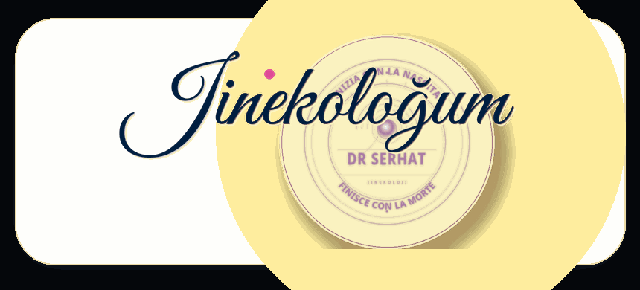
Güvenli hasta alanı
Jinekologum
Randevu öncesi temel bilgilerinizi düzenli, sade ve güvenli bir akışta hazırlamak için tasarlandı.
Jinekologum girişi
Kullanıcı adınız ve şifrenizle güvenli hasta alanınıza girin.
Kayıt isteği talebiniz başarıyla alınmıştır.
Onaylandıktan sonra giriş bilgileriniz e-posta ile gönderilecektir.
Sorularım
Buraya yazılan sorular muayenede hekiminizle konuşmak üzere kişisel hazırlık notu olarak düşünülmelidir.
Yalnızca metin mesajı yazılabilir.
Sorularım ve cevaplarım
Onaylı girişten sonra önceki sorularınız ve doktor yanıtları burada tarih sırasıyla görünür.
Dökümanlarım
Dosyalar açılış ekranında görünmez; seçtiğiniz PDF bir sonraki ekranda tam sayfa okuyucu içinde açılır.
PDF okuyucu
Doküman yalnızca bu hasta alanında görüntülenir; indirme bağlantısı gösterilmez.
Doküman yüklendiğinde burada tam sayfa okunacaktır.
Bu doküman yalnızca onaylı hasta alanında okunabilir. İndirme, çoğaltma, ekran görüntüsüyle yayma veya üçüncü kişilerle paylaşma izni verilmez. Tüm hakları saklıdır.
Benim doktorum
Bu alan Dr. Serhat Şen ile randevu, klinik bilgilendirme ve güvenli iletişim akışını tek yerde toplamak için hazırlanmıştır.
Liv Hospital randevu sayfasıHasta başvuruları ve sorular
Hasta kayıt isteği, onam durumu ve temel bilgiler güvenli Jinekologum CMS kaydından yönetici paneline yüklenir.
Henüz kayıt başvurusu yok
Yeni hasta kayıtları, dijital onam durumu ve temel bilgiler Velo backend yayında olduğunda bu panelde listelenir.
Soru cevap yönetimi
Seçili hastanın sorusu burada görünür; cevabınız hastanın Jinekologum alanındaki “Sorularım ve cevaplarım” bölümüne düşer.
PDF ekle
PDF hastanın açılış ekranında görünmez; hasta “Dökümanlarım” sekmesinden site içi okuyucuda açar. İndirme bağlantısı gösterilmez.
Bu dijital alan acil durum hattı, kesin tanı veya tedavi talimatı değildir. Girilen bilgiler muayene öncesi iletişimi düzenlemek içindir; tıbbi karar, fizik muayene, tetkik ve hekim değerlendirmesiyle verilir. Acil durumlarda 112’ye veya en yakın sağlık kuruluşuna başvurulmalıdır. Kişisel sağlık verileri yalnızca açık rıza ve güvenli teknik altyapı ile işlenmelidir.
Genital Performans
Fonksiyon, konfor ve mahremiyet birlikte değerlendirilir.
Vajinal estetik tek başına görüntü kararı değildir; fonksiyon, konfor ve mahremiyet birlikte değerlendirilen bir bütündür. Asıl soru "nasıl görünüyor" değil, "nasıl hissettiriyor" sorusudur.
“Estetik kararı değildi benim için; konfor kararıydı. Bu farkı anlatabildiğim ilk muayenede rahatladım.”
Temsili anlatım — birden fazla hastanın deneyiminden damıtılmıştır.
Vajinal estetik, cinsel sağlık ve fonksiyonel beklentiler tek başına görüntü üzerinden değil; muayene bulguları, kişinin şikayeti, yaşam dönemi ve gerçekçi hedefleriyle birlikte ele alınır.
Cinsel sağlık ve konfor
Kişisel cerrahi planlama
Genital Performans içerikleri hazırlanıyor...
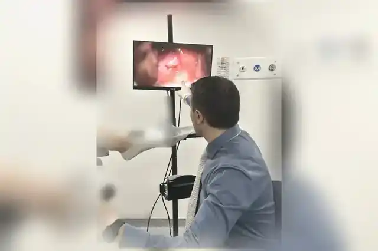
HPV
Tarama, takip ve kolposkopi kararları anlaşılır hale getirilir.
HPV bir tanı değil, bir bulgudur. Hayat boyu cinsel aktif olan kadınların büyük çoğunluğu HPV ile bir kez temas eder. Önemli olan virüsün varlığı değil; tipini, kalıcılığını ve servikste ne yaratıp yaratmadığını okuyabilmektir.
“Pozitif sonucu görünce hayatımın bittiğini düşündüm; üç yıl geçti, hâlâ takipteyim ve hâlâ iyiyim.”
Temsili anlatım — birden fazla hastanın deneyiminden damıtılmıştır.
HPV sonucunun ne anlama geldiği, hangi durumda takip gerektiği, kolposkopi ihtiyacı ve aşı seçenekleri panik yaratmadan, basamak basamak açıklanır.
Kanser Ansiklopedisi
Jinekolojik kanserlerde karar süreci sade bir dille anlatılır.
Kanser kelimesi tek başına bir hüküm değildir; bir başlangıçtır. Tanı, evreleme, cerrahi seçenekler ve takip — her biri kendi içinde çerçevelenen, ayrı kararlardır. Asıl soru "ne olacak" değil, "şimdi hangi adımdayız" sorusudur.
“Tanı geldiğinde önce annem ağladı, sonra ben; üçüncü ayda anladım ki bir kelime tek başına bir hüküm değil, bir başlangıçmış.”
Temsili anlatım — birden fazla hastanın deneyiminden damıtılmıştır.
Rahim, yumurtalık, rahim ağzı ve vulva-vajina kanserlerinde tanı, evreleme, cerrahi seçenekler ve takip süreci hastanın anlayacağı netlikte yapılandırılır.
Rahim ve yumurtalık kanserleri
Rahim ağzı kanseri
Cerrahi ve takip süreci
Kanser Ansiklopedisi içerikleri hazırlanıyor...
Hamilelik Yolu
Sağlıklı Hamilelik · Doğum · Geçiş Süreci.
Hamilelik tek bir an değil, bir yoldur. Gebelik öncesi hazırlıktan doğuma, doğumdan postpartum iyileşmeye — her aşamanın kendi soruları, kendi alarmları ve kendi destek planı vardır. Bedene güvenmek, takibi bırakmak değildir; ikisi birlikte yürür.
“İlk hamileliğimde her bulguya panik yaptım; ikincide öğrendim ki bedene güvenmek, takibi bırakmak değilmiş.”
Temsili anlatım — birden fazla hastanın deneyiminden damıtılmıştır.
Gebelik öncesi hazırlıktan doğuma, doğumdan postpartum iyileşmeye kadar izlenen yol; tarama, beslenme, hareket, alarm bulguları ve destek planıyla birlikte ele alınır.
Sağlıklı Hamilelik
Doğum
Geçiş Süreci